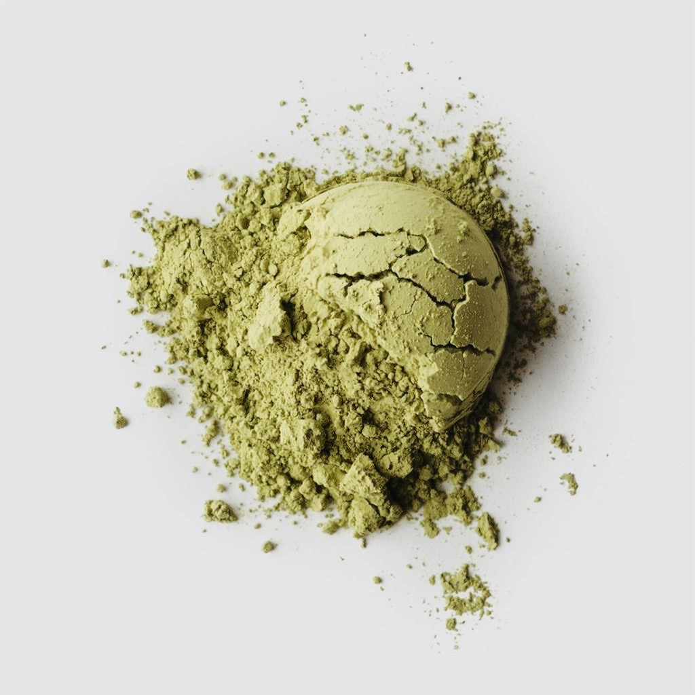
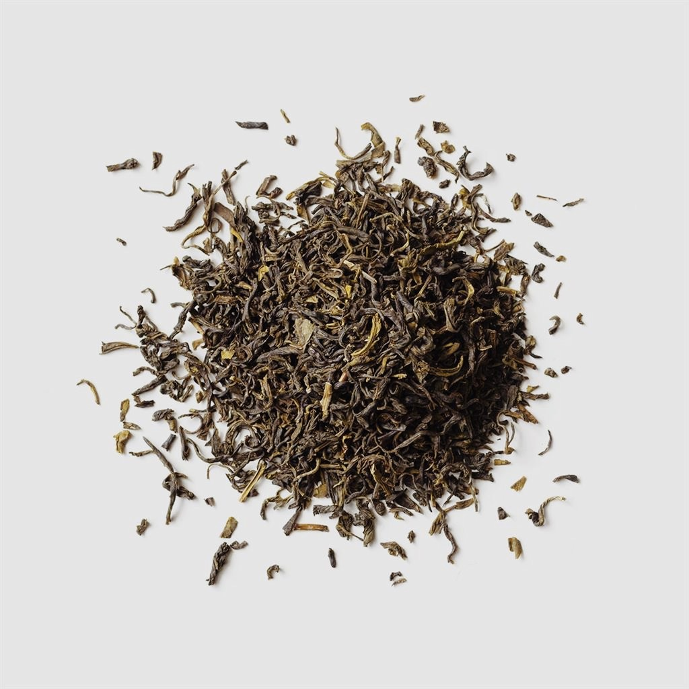

A Matchaholic's guide to matcha
Matcha is a type of powdered green tea that's rich in antioxidants. With traditional green tea, the leaves are steeped in hot water and then discarded. But with matcha, the dried leaves are actually ground into a powder, mixed into the drink, and consumed. The tea has a unique, non-bitter taste and vibrant green color and is regarded as the most aromatic form of green tea.
HEALTH BENEFITS OF MATCHA
1. High in antioxidants
Matcha contains a concentrated amount of antioxidants, which may reduce cell damage and prevent chronic disease.
2. May help protect the liver
Some studies have shown that matcha could prevent liver damage and decrease the risk of liver disease. However, additional studies are needed to look at the effects on humans in the general population.
3. Boosts brain function
Matcha has been shown to improve attention, memory, and reaction time. It also contains caffeine and L-theanine, which can improve several aspects of brain function.
4. May help prevent cancer
Test tube and animal studies have found that the compounds in matcha may inhibit the growth of cancer cells.
5. May promote heart health
Studies show that green tea and matcha can decrease several heart disease risk factors.
6. Helps you lose weight
Some studies show that green tea extract helps increase metabolism and fat burning, both of which may aid weight loss.
DIFFERENCES BETWEEN MATCHA AND GREEN TEA
Matcha

Matcha is a type of green tea. Manufacturers use specialized growing and processing techniques to turn the Camellia sinensis leaves into matcha. Matcha has a vibrant green color. Depending on the preparation, it may be slightly foamy at the top. Matcha has a grassy, earthy flavor, with sweet and bitter undertones. Matcha goes through a more careful growth and extraction process than other teas.
Green Tea

Green tea is one form of tea from the Camellia sinensis plant. This is the same plant used for other types of tea, such as black, white, and oolong tea. Green tea has an earthy, grassy, or vegetable-like taste. When brewed, the tea leaves behind a clear, yellowish green to light brown liquid. Green tea may have a mildly astringent flavor in the mouth.